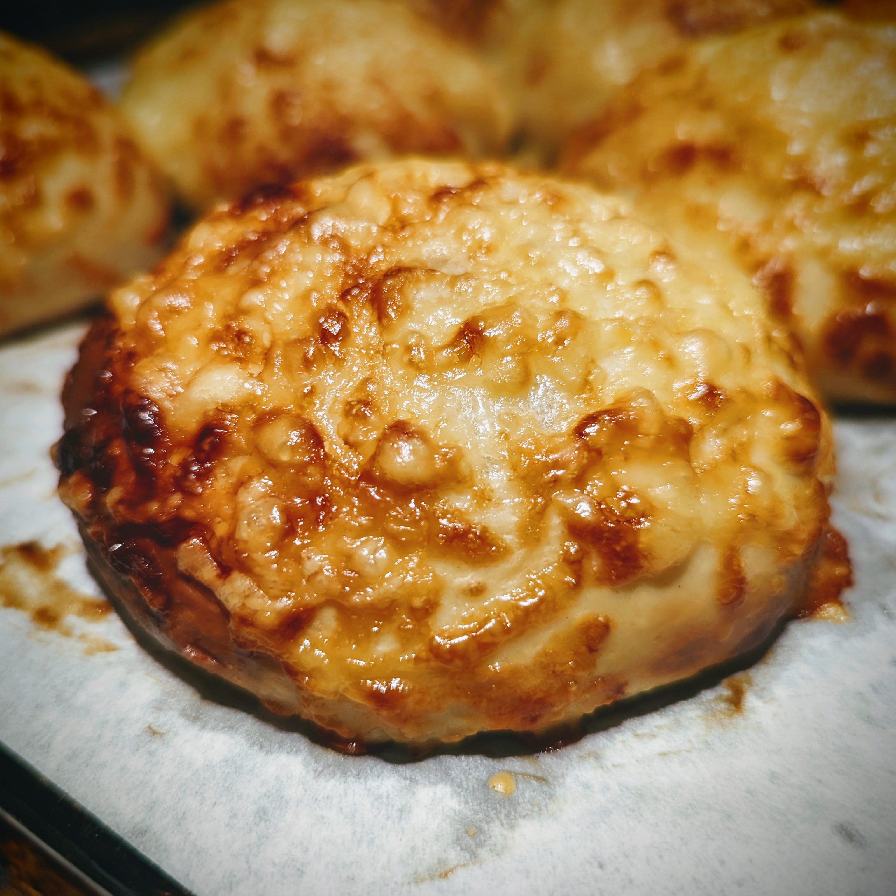

|  | |
| 35g | King Arthur bread flour |
| 85ml | water |
| 85ml | milk |
| ◇ | |
| 75ml | cold water |
| 5g | active dry yeast |
| 1 | large egg (50g) |
| 9g | salt |
| 20g | sugar |
| 365g | King Arthur bread flour |
| 50g | gouda cheese |
| 70g | softened unsalted butter |
| ◇ | |
| 100g | gouda cheese |
| 1 | egg |
Combine flour, water, and milk and heat in microwave for about 1 minute, or until it reaches 150°F (65°C). Whisk tangzhong until smooth.
Let cool down to room temperature. You can use a bain-marie with ice water to accelerate the process.
In a large bowl, combine water and yeast and give it time to bloom, about 10 minutes.
Mix cooled-down tangzhong into the water. Then add egg, salt, and sugar. Mix well to dissolve the salt and sugar.
Add the flour, and coarsely grated cheese. Mix to form a dough. Then knead for 4 minutes. Add softened butter and knead for another 8 minutes. The dough will initially be sticky but should come together and form a dough ball. Desired dough temperature is 25°C (77°F).
Cover and ferment for 30 minutes.
Divide the dough into 8 equal pieces, about 100g each. Pre-shape into rounds tightening the gluten network, and then leave to rest for 15 minutes.
Flatten the dough balls and place them on a non-stick paper lined baking sheet.
Brush with egg wash twice in about 5 minute intervals. Top with grated cheese.
Cover and cold ferment in the refigerator for 12 to 24 hours.
Preheat oven to 195°C (385°F), put chilled rolls into the oven, and inject steam. Do not use convection fan. After the first 10 minutes, reduce heat to 175°C (350°F). Bake for a total of 18 to 20 minutes.
Makes 8 breakfast rolls.